Peace Day
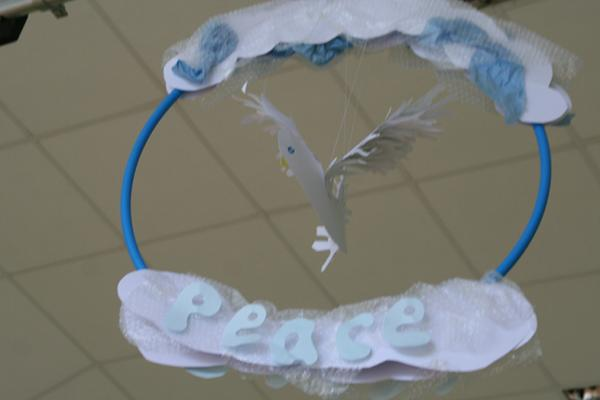
We celebrated Peace Day and thought about how we could make the school community more
peaceful.
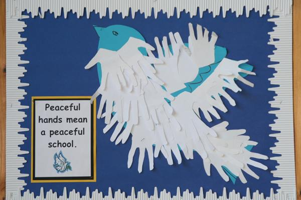
We joined hands and agreed peace was important.
Harvest 2010

Harvest around the world.
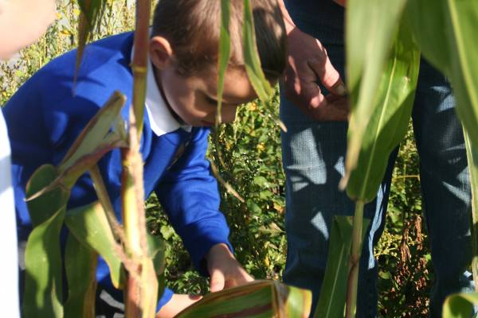
Picking corn in the school garden.
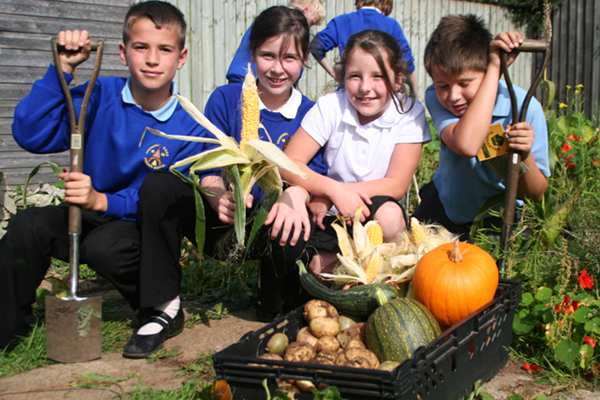
Kitchen club with there home grown harvest.
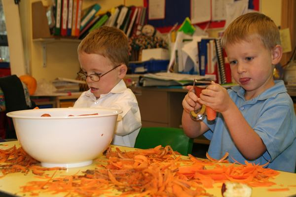
Peeling the produce.
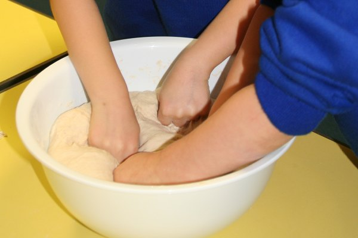
Kneeding the bread dough.
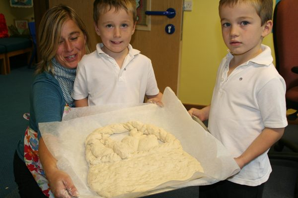
Ready to go in the oven.
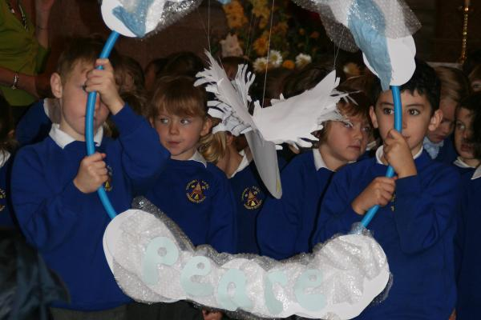
At the church. Links between harvest and peace.
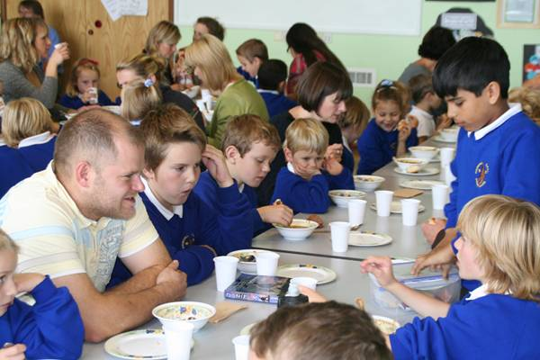
Eating lunch together.
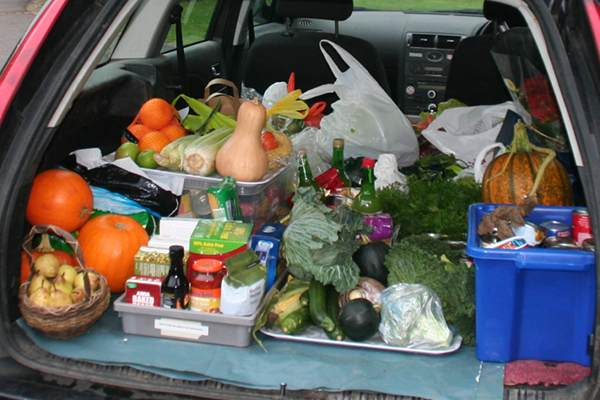
All the donated produce on the way to the hospice.
Aquinas Music Trio
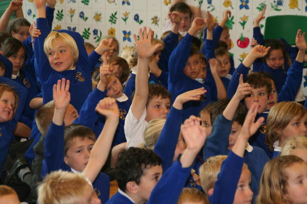
Hands up if you play an instrument.
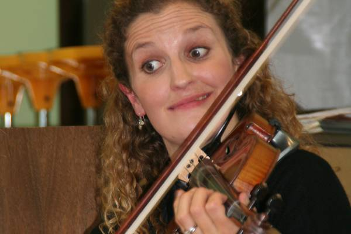
Violin playing.
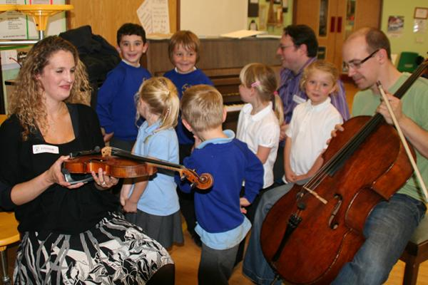
Aquinas Trio sharing their musical knowledge.
Whole school photo
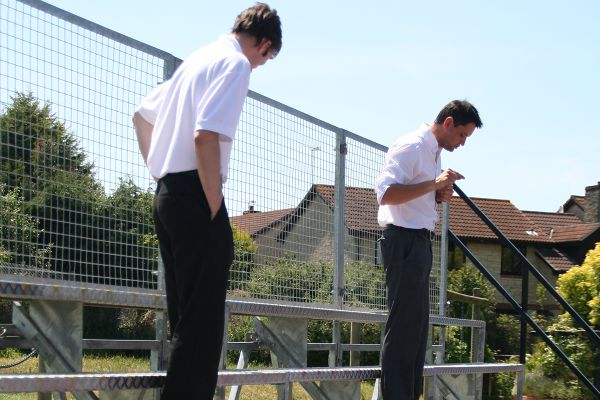
Setting up the staging ready for the big picture.
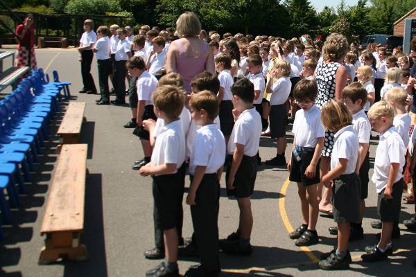
Getting ready to mount the steps and take up position.
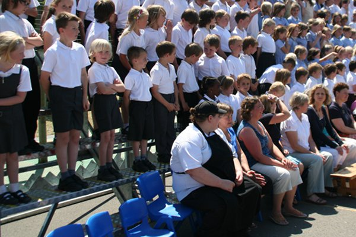
Almost there.
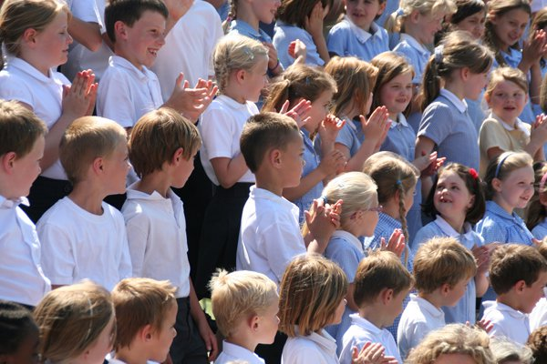
Say cheese!
Sports Day 2010
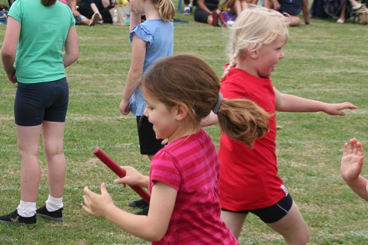
Running the relay race on a beautiful sunny sports day.
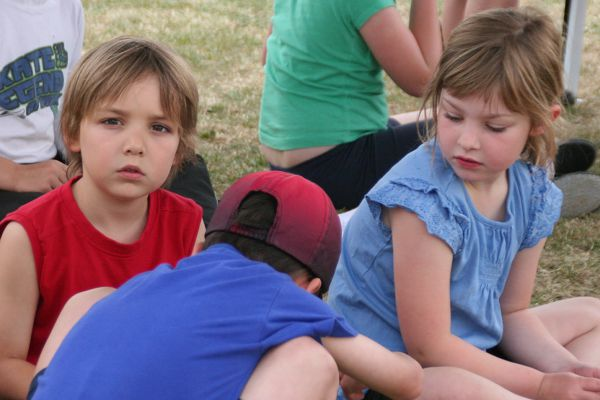
Waiting for the races.
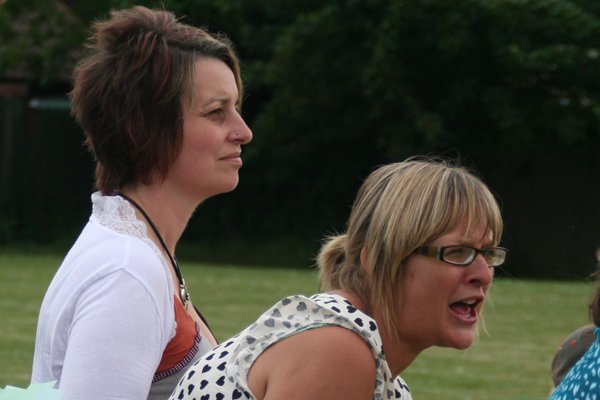
Brave parent helpers making the final judgements at the finishing line.
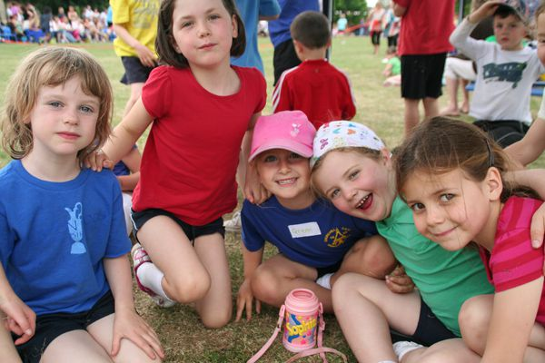
Sports days are fun.
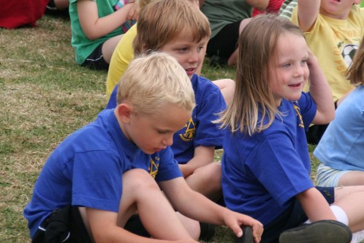
Enjoying the special day.
Growing a Pound
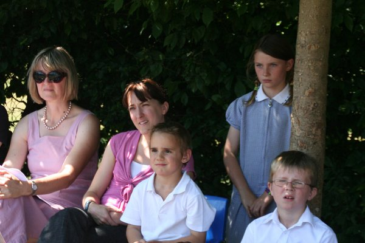
In the shade of the trees we shared amazing stories of growing £1. From washing cars to making ice creams.
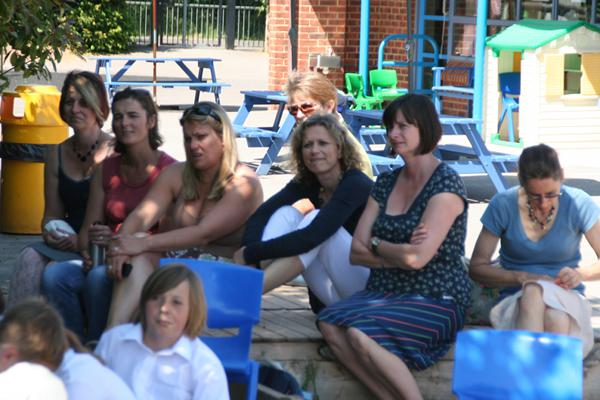
Parents joined in the fun and shared the work cooking planting and digging.
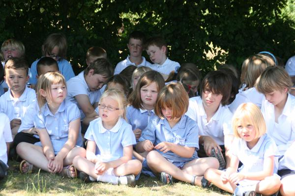
Thinking about how I'll grow my pound next time!
Year 6 leavers service at Wells Cathedral
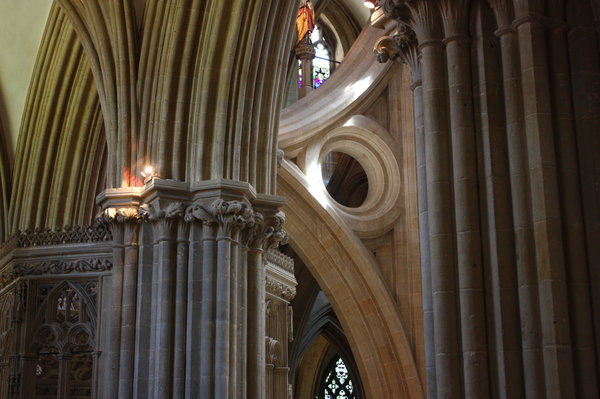
Year 6 spent 16th June surrounded by the magnificent architecture of Wells Cathedral.
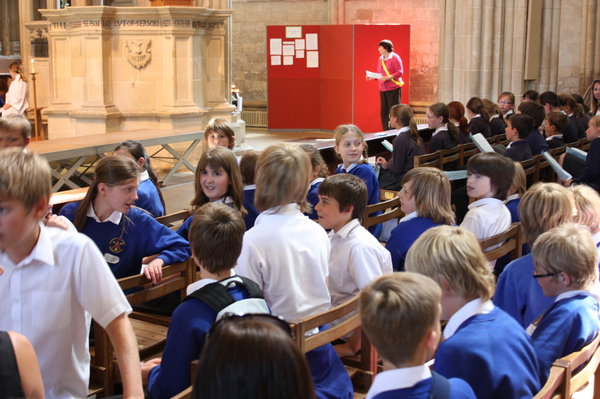
After a day of workshops, the class gathered, together with many other schools in the area, for a service
to mark their last term at primary school.
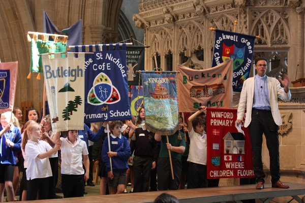
A parade of school banners wound its way through the ancient cathedral, finally gathering at the front. Here
you can just about make out the yellow Churchill bell tower at the back. Longer poles are on order for next year!
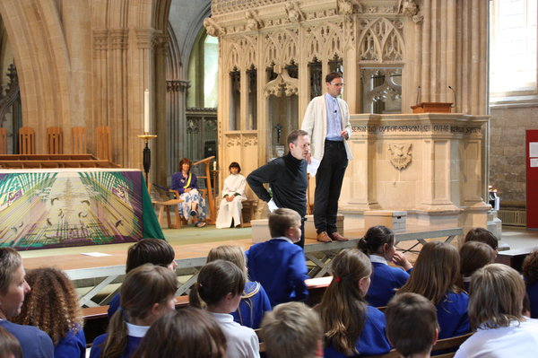
The vicar was assisted in his sermon about the stepping stones to the future by his friend the mime artist who
led one of the earlier workshops. The mime artist had wanted to be a rock star, but had discovered that mime
suited his voice better, thus perfectly illustrating the nature of the stepping stones.

After the uplifting service, everyone gathered outside in the glorious sunshine for the trip back to school.
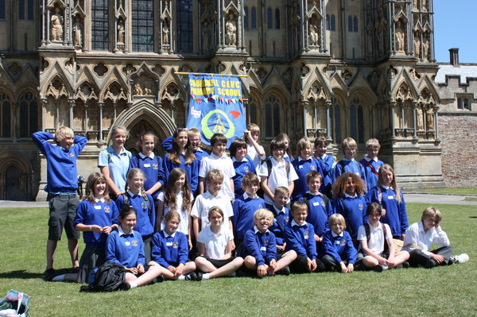
Before we let them go, of course, there was the matter of the mandatory group shot in front of the
Cathedral.
Cannington garden competition
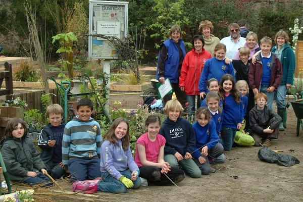
A team of pupils, staff and parents took part in the fourth Bridgwater College gardening
competition at the Cannington Centre.
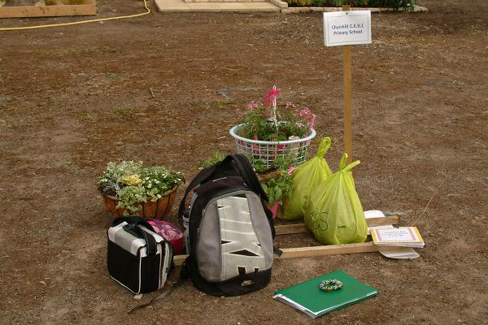
Their plan was to turn this...
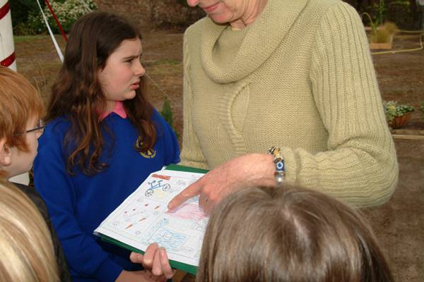
...into this.
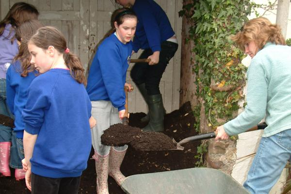
The work begins. Compost is collected,...
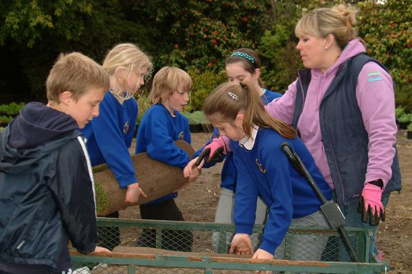
...turf is layed,...
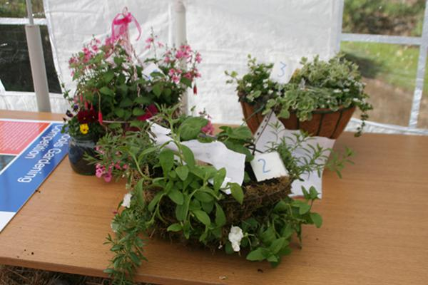
...hanging baskets are displayed,...
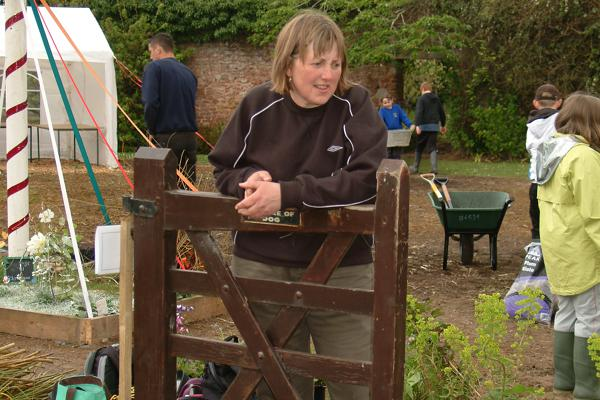
... and gates are leant on.
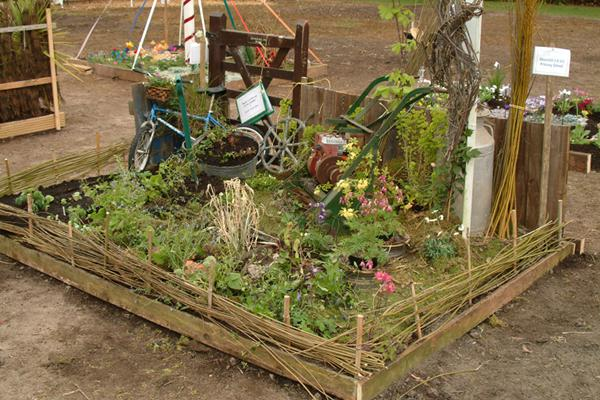
Finally the masterpiece is complete. We are very proud to announce that our garden won "Best Garden in Show" and
that our hanging baskets were all prize winners. Congratulations to all those involved!
External Tour

The front of our school, a green and leafy place nestled in the Mendips.

Our trim trail. Can you do the monkey bars?

Our pergola. A shady place to sit and chat when its sunny.

Our wildlife pond. A favoured haunt of our local heron.

Foundation playground. Completed in 2008. A fantastic new resource for our youngest students.